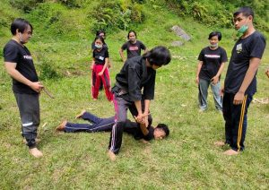
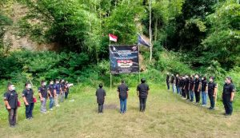
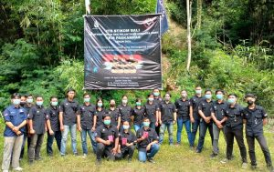

4 MEI 2021
Karangasem-Unit Kegatan Mahasiswa Pasukan Kemanan Acara ITB STIKOM Bali atau UKM PASKAMRAS ITB STIKOM Bali menggelar kegiatan pelatihan dasar (Pelatdas) dirangkaikan dengan pelantikan tiga anggota baru, bertempat di Garden Stone Bali, Desa Pempatan, Kecamatan Rendang, Kabupaten Karangasem, Bali. Tiga anggota baru tersebut adalah Ayu Indah Wulansari (angkatan 2018), Putu Ananta Risky Pratama dan Putu Yeremia Sosiawinaya, keduanya dari angkatan 2019.Kegiatan ini merupakan salah satu program kerja dari UKM PASKAMRAS ITB STIKOM Bali yang diselenggarakan satu tahun sekali. Mengusung tema “Membentuk Kepribadian yang Bertanggung Jawab dan Solidaritas dalam Berorganisasi” kegiatan ini bertujuan untuk meningkatkan rasa kebersamaan dan kepemimpinan dalam organisasi untuk calon anggota yang akan dilantik menjadi anggota resmi UKM PASKAMRAS ITB STIKOM Bali.
Ketua panitia PELATDAS, Widiatmika, Jumat (30/04) mengungkapkan, kegiatan diawali dengan briefing pukul 06.30 Wita di halaman kampus dengan jumlah peserta tiga orang. Kemudian seluruh peserta berangkat ke lokasi Pelatdas pukul 07.30 Wita dan sampai pada lokasi pada pukul 09.00 Wita. Sesampai di lokasi, peserta dikumpulkan untuk melakukan bersih-bersih sebelum upacara pembukaan. Setelah itu dilanjutkan dengan pemberian materi AD-ART yang dijelaskan oleh Ketua Umum UKM PASKAMRAS ITB STIKOM Bali Rony Anderson. Dari tanggal 30 April - 02 Mei 2021 peserta diberikan materi dan pelatihan.
“Sabtu (01/05) tepatnya pada siang hari, peserta dikumpulkan untuk persiapan pelatihan bela diri. Pada pelatihan bela diri peserta akan diajarkan tehnik bela diri Jui Jitsu oleh Daniel Christoffel. Pada tanggal 02 Mei 2021 dilakukan kegiatan Jurit Malam pada pukul 00.00-02.00 Wita dan pada pagi hari pukul 10.00-11.00 Wita dilakukan kegiatan pelantikan peserta menjadi anggota UKM PASKAMRAS ITB STIKOM Bali dan dilakukan penutupan acara.” jelas Widiatmika.
Tugas utama UKM PASKAMRAS adalah mengawal kegiatan resmi ITB STIKOM Bali, baik di lingkungan kampus maupun di luar kampus. Saat ini jumlah anggotanya sekitar 30-an orang.